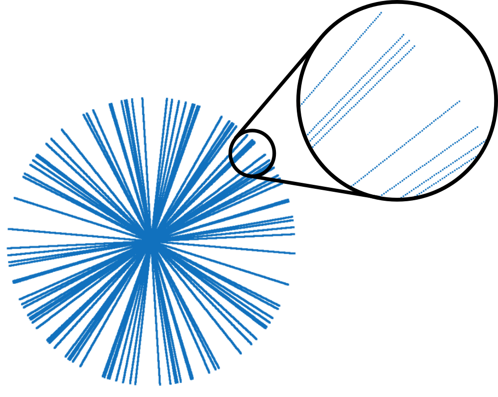
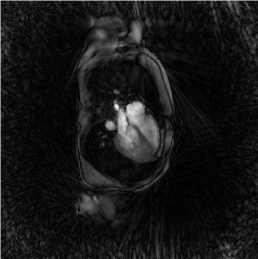
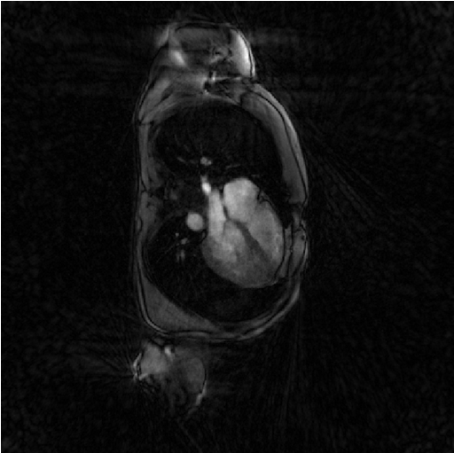

Tutorial 2 : Some static, iterative, non-cartesian reconstructions
Introduction
The code of this tutorial is written in the file demo_script_2.m in the demonstration folder. As any demonstration script, you can open it and run it right away.
We describe here how to call the static iterative reconstructions of Monalisa for non-cartesian data. They are called Sensa, Steva and Sensitiva. These reconstructions are not very efficient in practice but are of historical and theoretical interest. In particular, you can start from them to try coding novel reconstructions.
A non-iterative reconstruction maps any possible data-set to a reconstructed image in one step (or a few ones). In contrast to iterative reconstructions (or at least conventional iterative reconstruction), there is no model involved in non-iterative reconstruction: no map modeling the measured data as a function of the reconstructed image is involved.
In contrast, iterative reconstructions make use of a model that takes as argument a candidate image and maps it to some modeled data. The goal of the game is to find the candidate image for which the modeled data is as close as possible to the measured data, with respect to some predefined notion of distance as explained hereafter.
The model involved in Monalisa is the same linear model like in all modern reconstruction: it is the composition of the coil-sensitivity matrix \(C\) and of the discrete Fourier transform (uniform or not) \(F\) that we define hereafter. Of note, some non-linear model exist but they model the transverse magnetization non-linearly as a function of other parameters (like proton densitiy, relaxtation rates…) and then model the data by applying \(FC\) to the modeled image. The linear model \(FC\) is thus still part of non-linear models.
We have defined the coil-sensitivity matrix \(C\) in the previous tutorial, as well as the discret Fourier transform \(\acute{F}_c\) for each channel individualy. We defined here the discret Fourier transform (DFT) \(F\) for all channels simultaneously by the block matrix
\[\begin{split}F = \begin{pmatrix} \acute{F}_1 & 0 & \cdots & 0 \\ 0 & \acute{F}_2 & \cdots & 0 \\ \vdots & \vdots & \ddots & \vdots \\ 0 & 0 & \cdots & \acute{F}_{nCh} \end{pmatrix}\end{split}\]
There is therefore one block for each channel. There are all identical because the \(\acute{F}_c\)’s’ are different only by their symbole. We also define the measured data vector \(y_0\) by catenating vertically all vectors \(\acute{y}_{0, 1}, ..., \acute{y}_{0, nCh}\):
\[\begin{split}y_0 = \begin{pmatrix} \acute{y}_{0, 1} \\ \acute{y}_{0, 2} \\ \vdots \\ \acute{y}_{0, nCh} \end{pmatrix}\end{split}\]
As explained in the previous tutorial, the measured data \(\acute{y}_{0, c}\) is approximatively given by
\[\acute{y}_{0, c} \approx \acute{F}_c \cdot \acute{x}_c^{\#} \approx \acute{F}_c \cdot C_c \cdot x^{\#}\]
where \(x^{\#}\) is the ground-truth image that we idealy would like to reconstruct. We can now rewrite it for all channels simultaneously as
\[y_0 \approx F \cdot \acute{x} \approx F \cdot C \cdot x^{\#}\]
Since all norms are equivalent on \(\mathbb{C}^n\), we can reformulate that approximation as
\[\| F \cdot C \cdot x^{\#} - y_0 \|_{Y,2}^2 \approx 0\]
where \(\| \cdot \|_{Y,2}\) can be for the moment any 2-norm defined on the data space \(Y\). It is the norm that provides the predefined distance mentioned above. For short, we will now write \(FC\) instead of \(F \cdot C\).
The true image \(x^{\#}\) will remain unkown. The goal of the reconstruction process will instead consist in finding among all candidate images \(x \in X\) the one(s) that best satisfy the above approximation. We will call \(\hat{x}\) that best match (which recall the notation of estimators in statistics) and we will hope that it is close to \(x^{\#}\). Mathematically, the reconstruciton consists then in solving argmin-problem:
\[\text{Find } \hat{x} \in S^{LSQ} := \underset{x \in X }{\operatorname{argmin}} \frac{1}{2} \| F C x - y_0 \|_{Y, 2}^2\]
We wrote here \(S^{LSQ}\) the set of minimizers of the squared norm function
\[x \longmapsto \frac{1}{2} \| F C x - y_0 \|_{Y, 2}^2\]
It is the solution set of the argmin-problem just mentioned. We can show that it is never empty (there is always at leats one solution) and is an affine space parallel to \(Ker(FC)\) (the kernel of the the map \(FC\)). It follows that there is either a unique solution, in which case \(Ker(FC) = \{0\}\), or infinitely many, in which case the solution set is an entire afine space. If there is a unique solution, we say that the data are fully sampled. If there is infinitely many (which is the usual case in practice for non-cartesian trajectories), we say that the data are partially- (or under-) sampled. This terminology is kind of abusive because full or partial sampling is not directly linked to the data themself, it is rather directly linked to \(FC\), that is, to the sampling trajectory and the coil-sensitivity maps, independently of the data.
The reconstruction process cannot solely consist in identifying the solution set \(S^{LSQ}\) because we have to provide one image to radiologists (not an infinite collection). A solution \(\hat{x}\) must then be chosen among all sotuions of that set. A process that consists in choosing one solution among other in a solution set is called a regularization (or regularization process). In practice, the solving of the above argmin-problem is done by chosing an initial candidate image \(x_0\) and then by performing the conjugate-gradient descent algorithm with \(x_0\) as initiail image. This leads in a finit number of steps to one single solution \(\hat{x}\) of \(S^{SLQ}\). That method is known in the area of MRI reconstruction as the iterative-SENSE reconstruction (or conjugate-gradient SENSE or CG-SENSE). Since the method leads to a single solution of the solution set, it is inherently regularized. It can be shown (???ref. Math. Lang. for MRI recon.???) that the obtained solution \(\hat{x}\) is actually the orthogonal projection of the initial candidate image \(x_0\) onto the affine space \(S^{LSQ}\). The regularization is then performed at the instant when the initial image \(x_0\) is chosen. Some readers probably have guess that an orthogonal projection in the space of images needs an notion of orthogonality, and thus of inner-product on the space of images. We will come back to that point a bit later. We shall just point out that in the case where the initial image \(x_0\) is chosen to be the zero-image (tha value 0 in each voxel), then leads the conjugate-gradient descent to the image with smallest 2-norm among all elements of \(S^{LSQ}\). This is also equal to the Moore-Penrose pseudo inverse of \(FC\) applied to the measured data \(y_0\).
The result \(\hat{x}\) of the iterative-SENSE can however be quite far away from the unkown ideal target \(x^{\#}\). This depends on the initial guess \(x_0\) which is most of the time arbitrary or chosen more or less randomly. There is no accepted method to choose it optimally. The attempt to fix that problem was probably the next step in the historical development of MRI reconstructions.
Initialisation, initial image and gridding matrices
The script contains the following section.
Initialization
The first section identify where the running script is located and deduces to location of the demonstration data in order to load it.
% Loading demonstration data myCurrent_script_file = matlab.desktop.editor.getActiveFilename; d = fileparts(myCurrent_script_file); load([d, filesep, '..', filesep, 'demo_data', filesep, 'demo_data_2']); % Creating a folder for reconstruciton result and seting it as current % directory. cd([d, filesep, '..', filesep, '..', filesep, '..']); bmCreateDir('recon_folder'); cd('recon_folder')
This first section also creates a folder
recon_folderand set it as current directory in order to store the results of the iterative reconstructions. This folder is created just one level higher than themonalisafolder.You can plot the sampling trajectory t to have an idea of how good the data are sampled. You may get someting as follows:

This trajectory contains only 52 of the 256 original lines (20 %), still with 512 points each. It is obviously not fully sampled.
Evaluating the initial image for iterative reconstructions
The data set loaded for this tutorial is a radial data set where many data line of a fully sample set where discarded. Or if you prefere, only a few lines of a fully sampled data set where selected (20 % actually). This second section performes a gridded-zero-padded reconstructionn that will serve as initial image for further iterative reconstructions.
x0 = bmMathilda(y, t, ve, C, N_u, N_u, dK_u); bmImage(x0);

You note the massive presense of undersampling artefacts over the image. They can be interpreted as the result of a convolution between the unkown groundtruth image and a convolution kernel equal to the inverse Fourier transform of the zero-padding mask of the data.
You may also ask yourself why don’t we just deconvolve that image to recover the ground-truth ? The undersampling of data is like multiplying the data with the zero-pading mask and replacing many data values by zero and this is an non-reversible operation. There is a loss of information.
Evaluating gridding matrices for iterative reconstructions
Iterative reconstructions involves the repeated gridding of Cartesian data on the sampling non-cartesian (non-uniform) grid as well as its transpose operation at each iteration. These two operations are linear and can therefor be written as matrix multiplications.
We write Gu the gridding matrix from the Cartesian (uniform) grid to the non-cartesian one. And we write Gut its tranpose matrix. We will call both Gridding matrices. We evaluate them as follows.
[Gu, Gut] = bmTraj2SparseMat(t, ve, N_u, dK_u);
{kind=link}
{kind=link}
The reconstructions
The least-square reconstruction: iterative-SENSE (Sensa)
The iterative-SENSE implementation of Monalisa is called ‘Sensa’. It solves a non-regularized least-square porblem and is called as follows.
file_label = 'sensa'; frSize = N_u; nCGD = 4; ve_max = 5*prod(dK_u(:)); nIter = 20; witness_ind = 1:5:nIter; witnessInfo = bmWitnessInfo(file_label, witness_ind); x = bmSensa(x0, y, ve, C, Gu, Gut, frSize, ... nCGD, ve_max, ... nIter, witnessInfo); bmImage(x);

Regularized least-square reconstruction with l1-norm of spatial derivative regularisation (Steva)
The following reconstruction is a regularized least-square reconstruciton where the regularization is the l1-norm of the spatial derivative of the image.
file_label = 'steva'; frSize = N_u; nCGD = 4; delta = 0.2; rho = 10*delta; ve_max = 5*prod(dK_u(:)); nIter = 20; witness_ind = 1:5:nIter; witnessInfo = bmWitnessInfo(file_label, witness_ind); x = bmSteva(x0, [], [], y, ve, C, Gu, Gut, frSize, ... delta, rho, nCGD, ve_max, ... nIter, witnessInfo); bmImage(x);
Regularized least-square reconstruction with l2-norm of spatial derivative regularisation (Sensitiva)
The cousin of Setva is Sensitiva, which is also a regularized least-square reconstruction but where the regularization is the l2-norm of some linear function of the image: either the spatial derivative of the image, or the image itself. We call it here with the option regularizer set to spatial_derivative. That means that the regularization is the l2-norm of the spatial derivative of the image.
%% Iterative least-square regularized reconstruction % with l2 norm of spatial derivative regularization file_label = 'sensitiva_spatialD'; frSize = N_u; nCGD = 4; delta = 2; regularizer = 'spatial_derivative'; % 'identity' or 'spatial_derivative' ve_max = 5*prod(dK_u(:)); nIter = 20; witness_ind = 1:5:nIter; witnessInfo = bmWitnessInfo(file_label, witness_ind); x = bmSensitiva(x0, y, ve, C, Gu, Gut, frSize, ... delta, nCGD, ve_max, ... regularizer, ... nIter, witnessInfo); bmImage(x);

Regularized least-square reconstruction with l2-norm of image regularisation (Sensitiva)
We call here Sensitiva again by choosing option regularizer set to identity. That means that the regularization is the l2-norm of the of the image itself.
%% Iterative least-square regularized reconstruction % with l2 norm of image regularization file_label = 'sensitiva_id'; frSize = N_u; nCGD = 4; delta = 2; regularizer = 'identity'; % 'identity' or 'spatial_derivative' ve_max = 5*prod(dK_u(:)); nIter = 20; witness_ind = 1:5:nIter; witnessInfo = bmWitnessInfo(file_label, witness_ind); x = bmSensitiva(x0, y, ve, C, Gu, Gut, frSize, ... delta, nCGD, ve_max, ... regularizer, ... nIter, witnessInfo); bmImage(x);

{kind=link}
{kind=link}
Further Explanation
blablabla